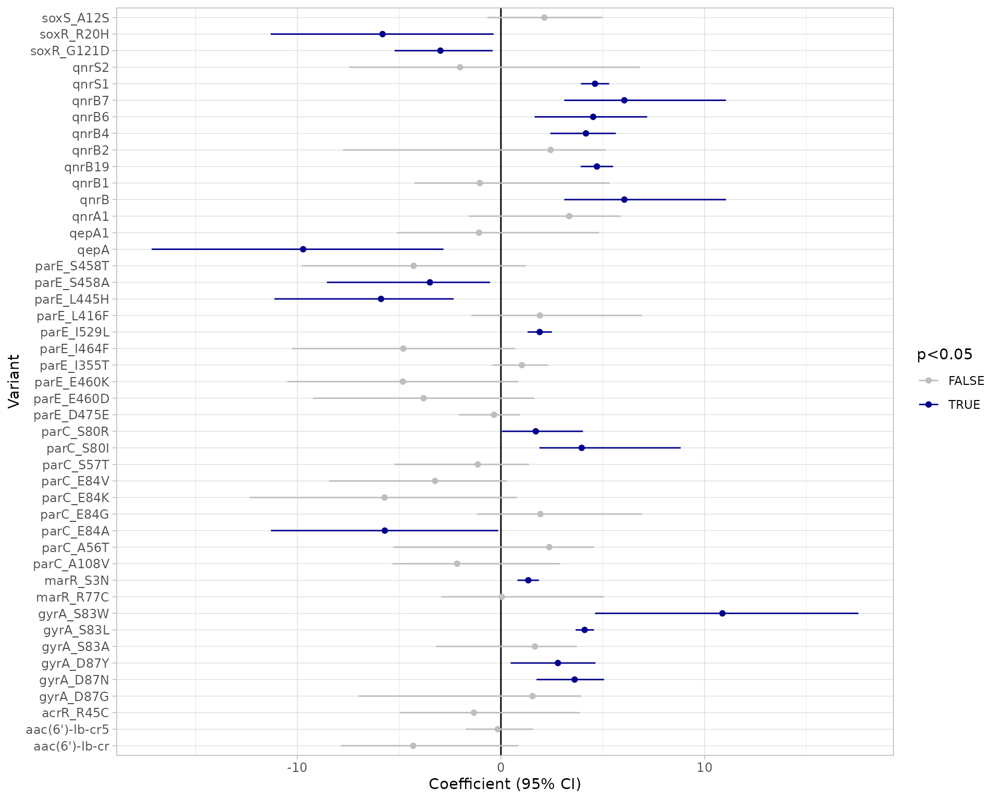
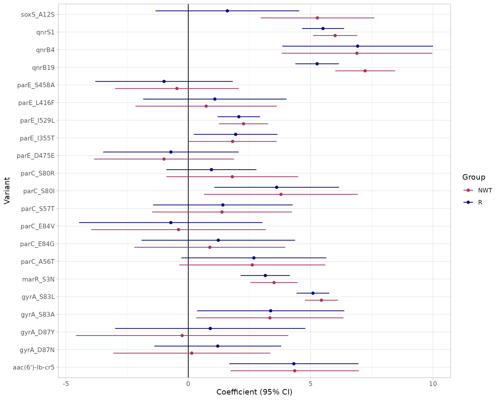
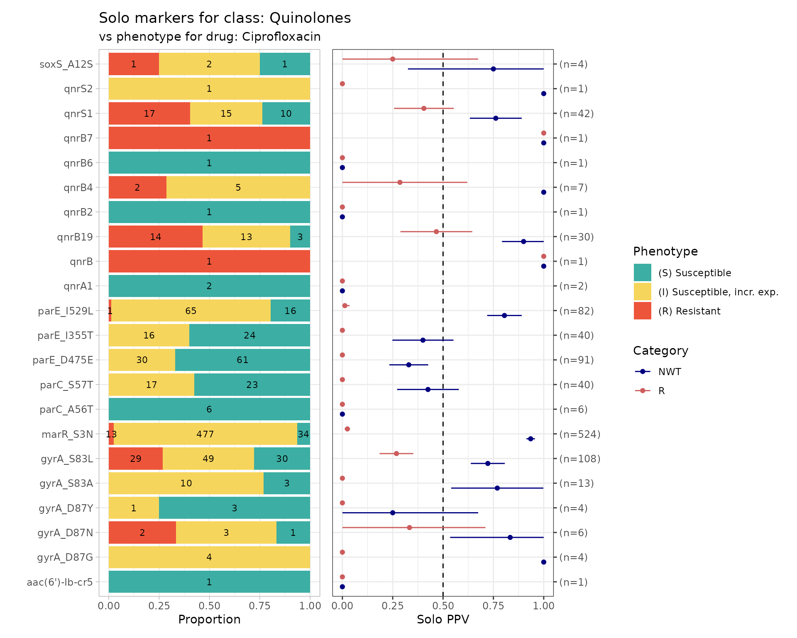
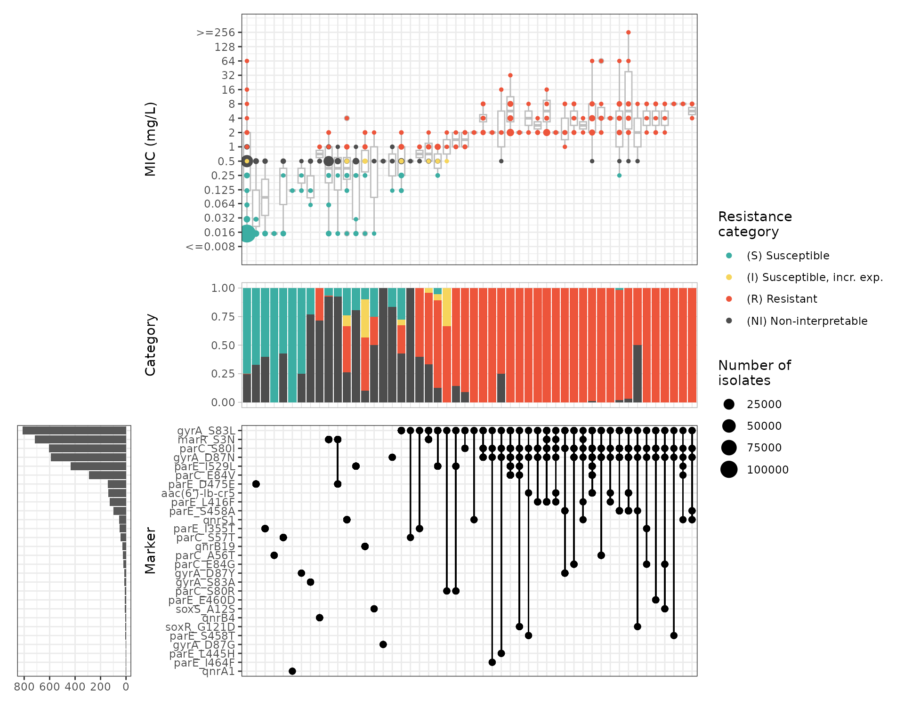
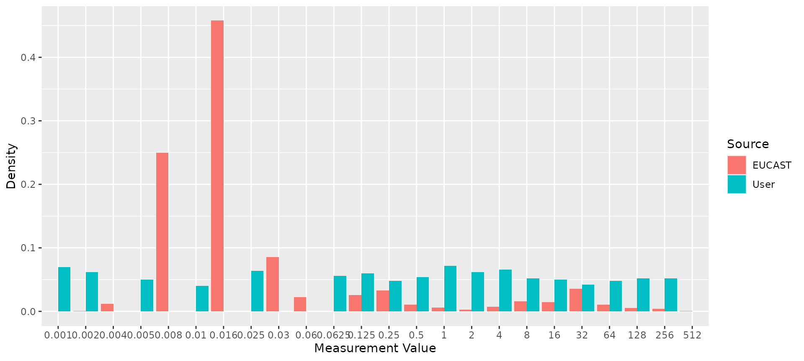
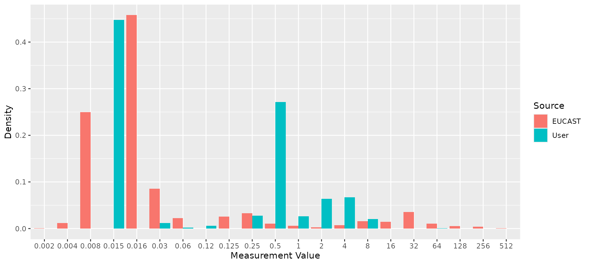

Introduction
AMRgen is a comprehensive R package designed to
integrate antimicrobial resistance genotype and phenotype data. It
provides tools to:
Import AMR genotype data (e.g. from AMRFinderPlus, hAMRonization)
Import AST phenotype data (e.g. from NCBI)
Conduct genotype-phenotype analyses to explore the impact of genotypic markers on phenotype, including via logistic regression, solo marker analysis, and upset plots
Fetch MIC or disk zone reference distributions from EUCAST
This vignette walks through a basic workflow using example datasets
included in the AMRgen package, and explains how to wrangle
your own data files into the right formats to use the same workflow.
1. Genotype table
The import_amrfp() function lets you load genotype data
from AMRFinderPlus outputs, and process it to generate an object with
the key columns needed to work with the AMRgen package.
# Example AMRfinderplus genotyping output
ecoli_geno_raw
#> # A tibble: 53,591 × 10
#> Name `Gene symbol` `Hierarchy node` `Element type` `Element subtype` Class
#> <chr> <chr> <chr> <chr> <chr> <chr>
#> 1 SAMN03… blaEC blaEC AMR AMR BETA…
#> 2 SAMN03… acrF acrF AMR AMR EFFL…
#> 3 SAMN03… glpT_E448K glpT AMR POINT FOSF…
#> 4 SAMN03… floR floR AMR AMR PHEN…
#> 5 SAMN03… mdtM mdtM AMR AMR EFFL…
#> 6 SAMN03… blaTEM-1 blaTEM-1 AMR AMR BETA…
#> 7 SAMN03… sul2 sul2 AMR AMR SULF…
#> 8 SAMN03… aph(3'')-Ib aph(3'')-Ib AMR AMR AMIN…
#> 9 SAMN03… aph(6)-Id aph(6)-Id AMR AMR AMIN…
#> 10 SAMN03… tet(A) tet(A) AMR AMR TETR…
#> # ℹ 53,581 more rows
#> # ℹ 4 more variables: Subclass <chr>, `% Coverage of reference sequence` <dbl>,
#> # `% Identity to reference sequence` <dbl>,
#> # `Accession of closest sequence` <chr>
# Load AMRfinderplus output
# (replace 'ecoli_geno_raw' with the filepath for any AMRfinderplus output)
ecoli_geno <- import_amrfp(ecoli_geno_raw, "Name")
#> Input is already a dataframe.
#> [1] "Need Method columns to assign to parse mutations and assign variation type"
# Check the format of the processed genotype table
head(ecoli_geno)
#> # A tibble: 6 × 18
#> Name gene mutation node `variation type` marker marker.label drug_agent
#> <chr> <lgl> <lgl> <chr> <lgl> <chr> <chr> <ab>
#> 1 SAMN0317… NA NA blaEC NA blaEC NA NA
#> 2 SAMN0317… NA NA acrF NA acrF NA NA
#> 3 SAMN0317… NA NA glpT NA glpT_… NA FOS
#> 4 SAMN0317… NA NA floR NA floR NA CHL
#> 5 SAMN0317… NA NA floR NA floR NA FLR
#> 6 SAMN0317… NA NA mdtM NA mdtM NA NA
#> # ℹ 10 more variables: drug_class <chr>, `Gene symbol` <chr>,
#> # `Hierarchy node` <chr>, `Element type` <chr>, `Element subtype` <chr>,
#> # Class <chr>, Subclass <chr>, `% Coverage of reference sequence` <dbl>,
#> # `% Identity to reference sequence` <dbl>,
#> # `Accession of closest sequence` <chr>The genotype table has one row for each genetic marker detected in an input genome, i.e. one per strain/marker combination.
If your genotype data is not in AMRfinderplus format, you can wrangle other input data files into the necessary format.
The essential columns for a genotype table to work with
AMRgen functions are:
Name: character string giving the sample name, used to link to sample names in the phenotype file (this column can have a different name, in which case you’ll need to make sure it is the first column in the dataframe OR pass its name to the functions usinggeno_sample_col)marker: character string giving the name of the genetic marker detecteddrug_class: character string giving the antibiotic class associated with this marker
NOTE: You should consider whether you have genomes with no AMR
markers detected by genotyping, and how to make sure these are include
in your analyses. E.g. AMRfinderplus will output one row per
genome/marker combination, but if you have a genome with no markers
detected, there will be no row at all for that genome in the
concatenated output file. If your species has core genes included in
AMRfinderplus this probably won’t be a problem as you would expect some
calls for every genome (e.g. AMRfinderplus will report blaSHV, oqxA,
oqxB, fosA in all Klebsiella pneumoniae genomes, so all input genomes
will appear in the concatenated output file). An easy solution is to run
a check to make sure that all genome names in your input dataset are
represented in the genotype table, and if any are missing add empty rows
for these using
e.g. tibble(Name=missing_samples) %>% bind_rows(genotype_table).
2. Phenotype table
The import_ncbi_ast() function imports AST data from
NCBI format files.
# Example E. coli AST data from NCBI
# This one has already been imported and phenotypes interpreted from assay data
# You can make your own from NCBI format data using:
# import_ncbi_ast("filepath/AST.tsv", interpret=T)
ecoli_ast
#> # A tibble: 15,320 × 24
#> id spp_pheno drug_agent ecoff pheno mic disk guideline
#> <chr> <mo> <ab> <chr> <sir> <mic> <dsk> <chr>
#> 1 SAMN36015110 B_ESCHR_COLI CIP NWT R <128.00 NA CLSI
#> 2 SAMN07988997 B_ESCHR_COLI IPM NWT S <=1.00 NA CLSI
#> 3 SAMN11638310 B_ESCHR_COLI CIP NWT R 256.00 NA CLSI
#> 4 SAMN05729964 B_ESCHR_COLI CIP NWT R 64.00 NA CLSI
#> 5 SAMN18634044 B_ESCHR_COLI CIP NWT R <=1.00 NA CLSI
#> 6 SAMN26232716 B_ESCHR_COLI CIP NA NA NA NA CLSI
#> 7 SAMN26232716 B_ESCHR_COLI CIP NWT R NA 20 CLSI
#> 8 SAMN10620111 B_ESCHR_COLI CIP NWT R >=4.00 NA CLSI
#> 9 SAMN10620168 B_ESCHR_COLI CIP NWT R >=4.00 NA CLSI
#> 10 SAMN10620104 B_ESCHR_COLI CIP NWT S <=0.25 NA CLSI
#> # ℹ 15,310 more rows
#> # ℹ 16 more variables: `Organism group` <chr>, `Scientific name` <chr>,
#> # `Isolation type` <chr>, Location <chr>, `Isolation source` <chr>,
#> # Isolate <chr>, Antibiotic <chr>, `Resistance phenotype` <chr>,
#> # `Measurement sign` <chr>, `MIC (mg/L)` <dbl>, `Disk diffusion (mm)` <dbl>,
#> # `Laboratory typing platform` <chr>, Vendor <chr>,
#> # `Laboratory typing method version or reagent` <chr>, …
head(ecoli_ast)
#> # A tibble: 6 × 24
#> id spp_pheno drug_agent ecoff pheno mic disk guideline
#> <chr> <mo> <ab> <chr> <sir> <mic> <dsk> <chr>
#> 1 SAMN36015110 B_ESCHR_COLI CIP NWT R <128 NA CLSI
#> 2 SAMN07988997 B_ESCHR_COLI IPM NWT S <=1 NA CLSI
#> 3 SAMN11638310 B_ESCHR_COLI CIP NWT R 256 NA CLSI
#> 4 SAMN05729964 B_ESCHR_COLI CIP NWT R 64 NA CLSI
#> 5 SAMN18634044 B_ESCHR_COLI CIP NWT R <=1 NA CLSI
#> 6 SAMN26232716 B_ESCHR_COLI CIP NA NA NA NA CLSI
#> # ℹ 16 more variables: `Organism group` <chr>, `Scientific name` <chr>,
#> # `Isolation type` <chr>, Location <chr>, `Isolation source` <chr>,
#> # Isolate <chr>, Antibiotic <chr>, `Resistance phenotype` <chr>,
#> # `Measurement sign` <chr>, `MIC (mg/L)` <dbl>, `Disk diffusion (mm)` <dbl>,
#> # `Laboratory typing platform` <chr>, Vendor <chr>,
#> # `Laboratory typing method version or reagent` <chr>,
#> # `Testing standard` <chr>, `Create date` <dttm>The phenotype table has one row for each assay measurement, i.e. one per strain/drug combination. If your assay data is not in NCBI AST format, you can wrangle other input data files into the necessary format.
The essential columns for a phenotype table to work with
AMRgen functions are:
id: character string giving the sample name, used to link to sample names in the genotype file (this column can have a different name, in which case you’ll need to make sure it is the first column in the dataframe OR pass its name to the functions usingpheno_sample_col)spp_pheno: species in the form of an AMR packagemoclass (can be created from a column with species name as string, usingAMR::as.mo(species_string))drug_agent: antibiotic name in the form of an AMR packageabclass (can be created from a column with antibiotic name as string, usingAMR::as.ab(antibiotic_string))pheno: S/I/R phenotype calls in the form of an AMR packagesirclass (can be created from a column with phenotype values as string, usingAMR::as(sir_string), or generated by interpreting MIC or disk assay data usingAMR::as.sir)
If you want to do analyses with raw assay data (e.g. upset plots) you will need that data in one or both of:
mic: MIC in the form of an AMR packagemicclass (can be created from a column with assay values as string, usingAMR::as.mic(mic_string))disk: disk diffusion zone diameter in the form of an AMR packagediskclass (can be created from a column with assay values as string, usingAMR::as.disk(disk_string))
3. Combine genotype and phenotype data for a given drug
The genotype and phenotype tables can include data related to many
different drugs, but we need to analyse things one drug at a time. The
function get_binary_matrix() can be used to extract
phenotype data for a specified drug, and genotype data for markers
associated with a specified drug class. It returns a single dataframe
with one row per strain, for the subset of strains that appear in both
the genotype and phenotype input tables. Each row indicates, for one
strain, both the phenotypes (with SIR column, any assay columns if
desired, and boolean 1/0 coding of R and NWT status) and the genotypes
(one column per marker, with boolean 1/0 coding of marker
presence/absence).
# Get matrix combining phenotype data for ciprofloxacin, binary calls for R/NWT phenotype,
# and genotype presence/absence data for all markers associated with the relevant drug
# class (which are labelled "Quinolones" in AMRfinderplus).
cip_bin <- get_binary_matrix(ecoli_geno, ecoli_ast, antibiotic = "Ciprofloxacin", drug_class_list = c("Quinolones"), sir_col = "pheno", keep_assay_values = T, keep_assay_values_from = "mic")
#> [1] "Some samples had multiple phenotype rows, taking the most resistant only"
#> [1] "Defining NWT using ecoff column provided: ecoff"
# check format
head(cip_bin)
#> # A tibble: 6 × 50
#> id pheno mic R NWT gyrA_S83L gyrA_D87Y gyrA_D87N parC_S80I
#> <chr> <sir> <mic> <dbl> <dbl> <dbl> <dbl> <dbl> <dbl>
#> 1 SAMN03177615 S <=0.015 0 0 0 0 0 0
#> 2 SAMN03177616 S <=0.015 0 0 0 0 0 0
#> 3 SAMN03177617 S <=0.015 0 0 0 0 0 0
#> 4 SAMN03177618 S 0.250 0 0 1 0 0 0
#> 5 SAMN03177619 S 0.120 0 0 0 1 0 0
#> 6 SAMN03177620 S <=0.015 0 0 0 0 0 0
#> # ℹ 41 more variables: parE_S458A <dbl>, parC_S80R <dbl>, parE_L416F <dbl>,
#> # qnrB6 <dbl>, gyrA_D87G <dbl>, parC_S57T <dbl>, parC_E84A <dbl>,
#> # soxS_A12S <dbl>, qnrB2 <dbl>, qnrS2 <dbl>, parC_E84K <dbl>,
#> # parC_A56T <dbl>, qnrB19 <dbl>, `aac(6')-Ib-cr5` <dbl>, parC_E84V <dbl>,
#> # parE_I529L <dbl>, parE_S458T <dbl>, parE_E460D <dbl>, parC_E84G <dbl>,
#> # qnrS1 <dbl>, marR_S3N <dbl>, `aac(6')-Ib-cr` <dbl>, soxR_R20H <dbl>,
#> # qnrB1 <dbl>, parE_I355T <dbl>, soxR_G121D <dbl>, qnrB4 <dbl>, qepA <dbl>, …
# list colnames, to see full list of quinolone markers included
colnames(cip_bin)
#> [1] "id" "pheno" "mic" "R"
#> [5] "NWT" "gyrA_S83L" "gyrA_D87Y" "gyrA_D87N"
#> [9] "parC_S80I" "parE_S458A" "parC_S80R" "parE_L416F"
#> [13] "qnrB6" "gyrA_D87G" "parC_S57T" "parC_E84A"
#> [17] "soxS_A12S" "qnrB2" "qnrS2" "parC_E84K"
#> [21] "parC_A56T" "qnrB19" "aac(6')-Ib-cr5" "parC_E84V"
#> [25] "parE_I529L" "parE_S458T" "parE_E460D" "parC_E84G"
#> [29] "qnrS1" "marR_S3N" "aac(6')-Ib-cr" "soxR_R20H"
#> [33] "qnrB1" "parE_I355T" "soxR_G121D" "qnrB4"
#> [37] "qepA" "gyrA_S83A" "qnrA1" "parE_D475E"
#> [41] "parC_A108V" "qepA1" "parE_E460K" "gyrA_S83W"
#> [45] "qnrB7" "marR_R77C" "parE_L445H" "parE_I464F"
#> [49] "qnrB" "acrR_R45C"4. Model a binary drug phenotype using genetic marker presence/absence data
Logistic regression models can be informative to get an overview of the association between a drug resistance phenotype, and each marker thought to be associated with the relevant drug class.
The amr_logistic() function uses the
get_binary_matrix function to generate binary-coded
genotype and phenotype data for a specified drug and class; and fits two
logistic regression models of the form
R ~ marker1 + marker2 + marker3 + ... and
NWT ~ marker1 + marker2 + marker3 + ....
Note that the ‘NWT’ variable in the latter model can be taken either
from a precomputed ECOFF-based call of WT=wildtype/NWT=nonwildtype
(encoded in the input column ecoff_col), or computed from
the S/I/R phenotype as NWT=R/I and WT=S.
The amr_logistic() function can fit the model using
either the standard logistic regression approach implemented in the
glm() function, or Firth’s bias-reduced
penalized-likelihood logistic regression implemented in the
logistf package. The default is to use Firth’s regression,
as standard logistic regression can fail if there are too observations
in some subgroups, which happens quite often with this kind of data. To
use glm() instead, set glm=TRUE.
The function also filters out markers with too few observations in
the combined genotype/phenotype dataset. The default minimum is 10 but
this can be changed using the maf parameter (maf stands for
‘minor allele frequency’). If you are having trouble fitting models, it
may be because too many markers and combinations have very few
observations, and you might try increasing the maf value to
ensure that rare markers are excluded prior to model fitting.
Using this modelling approach, a negative assocation with a single marker and phenotype call of R and NWT is a strong indication that marker does not contribute to resistance. Note however that a positive association between a marker and R or NWT does not necessarily imply the marker is independently contributing to the resistance phenotype, as there may be non-independence between markersthat is not adequately adjusted for by the model.
The function returns 4 objects:
modelR, modelNWT: data frames summarising each model, with beta coefficient, lower and upper values of 95% confidence intervals, and p-value for each marker (generated from the raw model output usinglogistf_details()orglm_details()as relevant)plot: a ggplot2 object generated from themodelRandmodelNWTobjects using thecompare_estimates()functionbin_mat: the binary matrix used as input to the regression models
# Manually run Firth's logistic regression model using the binary matrix produced above
dataR <- cip_bin[, setdiff(names(cip_bin), c("id", "pheno", "mic", "NWT"))]
modelR <- logistf::logistf(R ~ ., data = dataR)
#> Warning in logistf::logistf(R ~ ., data = dataR): logistf.fit: Maximum number
#> of iterations for full model exceeded. Try to increase the number of iterations
#> or alter step size by passing 'logistf.control(maxit=..., maxstep=...)' to
#> parameter control
summary(modelR)
#> logistf::logistf(formula = R ~ ., data = dataR)
#>
#> Model fitted by Penalized ML
#> Coefficients:
#> coef se(coef) lower 0.95 upper 0.95 Chisq
#> (Intercept) -4.96390507 0.1811448 -5.34017910 -4.6231446 Inf
#> gyrA_S83L 4.11280948 0.2272604 3.67076498 4.5689857 Inf
#> gyrA_D87Y 2.80024435 0.9652413 0.47378680 4.6457032 5.280028e+00
#> gyrA_D87N 3.62098439 0.7709538 1.74841360 5.0668148 1.118989e+01
#> parC_S80I 3.96648770 1.3787998 1.89258911 8.8299875 2.247148e+01
#> parE_S458A -3.48867207 1.6042039 -8.54898079 -0.5324673 5.988137e+00
#> parC_S80R 1.71325782 0.9385031 0.05191566 4.0315534 4.108450e+00
#> parE_L416F 1.91056416 1.6262212 -1.44814273 6.9152611 1.470118e+00
#> qnrB6 4.52952457 1.2592524 1.65349298 7.1835449 8.065719e+00
#> gyrA_D87G 1.55333099 1.4956678 -6.98907726 3.9394371 4.225022e-01
#> parC_S57T -1.13436499 1.4203029 -5.23754021 1.3915663 5.101399e-01
#> parC_E84A -5.70441041 2.2070287 -11.29721113 -0.1323417 3.971922e+00
#> soxS_A12S 2.13648042 1.3286588 -0.66203438 4.9842385 1.987397e+00
#> qnrB2 2.44199360 1.5962790 -7.75945152 5.1604273 1.289487e+00
#> qnrS2 -2.00673705 2.1305732 -7.43942342 6.8150128 6.985621e-01
#> parC_E84K -5.71832108 2.7625239 -12.33010980 0.7827491 3.094908e+00
#> parC_A56T 2.37563231 1.4855542 -5.28098230 4.5695832 6.320247e-01
#> qnrB19 4.71475162 0.4005202 3.91716136 5.5054620 Inf
#> `aac(6')-Ib-cr5` -0.15833425 0.7260696 -1.72410982 1.5871315 3.801923e-02
#> parC_E84V -3.23416018 1.7711701 -8.43712948 0.2806570 3.262335e+00
#> parE_I529L 1.90275405 0.3016164 1.30556855 2.5034222 3.918613e+01
#> parE_S458T -4.28790735 2.1477103 -9.77270323 1.2196570 2.655964e+00
#> parE_E460D -3.79866238 2.1030072 -9.21744527 1.6368531 2.259181e+00
#> parC_E84G 1.93913364 1.6389863 -1.17354599 6.9343461 1.627272e+00
#> qnrS1 4.62335756 0.3515918 3.92721260 5.3173640 Inf
#> marR_S3N 1.34304342 0.2659083 0.80901622 1.8663526 2.288652e+01
#> `aac(6')-Ib-cr` -4.30635808 1.8379077 -7.84380488 0.8539635 3.001890e+00
#> soxR_R20H -5.81488017 2.2224293 -11.30563868 -0.3592767 4.196651e+00
#> qnrB1 -1.03326877 1.7233519 -4.24068024 5.3382336 1.418020e-01
#> parE_I355T 1.02709526 0.6715214 -0.40520437 2.3225745 2.049858e+00
#> soxR_G121D -2.97288926 1.1081794 -5.22642088 -0.4070150 4.895143e+00
#> qnrB4 4.17537609 0.7837062 2.42602120 5.6429731 1.392998e+01
#> qepA -9.71337827 3.0807874 -17.15799224 -2.8201977 6.619549e+00
#> gyrA_S83A 1.66806821 1.4515121 -3.19180388 3.7277821 8.393209e-01
#> qnrA1 3.35446716 1.5597479 -1.58044493 5.8907270 2.294695e+00
#> parE_D475E -0.33734293 0.7214083 -2.08073197 0.9305620 2.182499e-01
#> parC_A108V -2.14924472 1.7304455 -5.32647631 2.9202773 1.089096e+00
#> qepA1 -1.07546566 1.8773877 -5.11567232 4.8141372 1.572823e-01
#> parE_E460K -4.81702417 2.3266297 -10.49147703 0.8547559 3.009358e+00
#> gyrA_S83W 10.87954154 2.8555865 4.62377311 17.5616932 8.436158e+00
#> qnrB7 6.06251736 1.6430095 3.11145478 11.0538683 1.259767e+01
#> marR_R77C 0.04695384 1.6545330 -2.92831420 5.0478355 8.109452e-04
#> parE_L445H -5.88907864 1.8237009 -11.12464450 -2.3249701 1.023072e+01
#> parE_I464F -4.79046635 2.1585223 -10.25943106 0.6897515 3.165628e+00
#> qnrB 6.06251736 1.6430095 3.11145478 11.0538683 1.259767e+01
#> acrR_R45C -1.32835211 1.8735607 -4.96320806 3.8738455 4.249534e-01
#> p method
#> (Intercept) 0.000000e+00 2
#> gyrA_S83L 0.000000e+00 2
#> gyrA_D87Y 2.157140e-02 2
#> gyrA_D87N 8.224427e-04 2
#> parC_S80I 2.132864e-06 2
#> parE_S458A 1.440240e-02 2
#> parC_S80R 4.266945e-02 2
#> parE_L416F 2.253270e-01 2
#> qnrB6 4.511057e-03 2
#> gyrA_D87G 5.156911e-01 2
#> parC_S57T 4.750783e-01 2
#> parC_E84A 4.626492e-02 2
#> soxS_A12S 1.586133e-01 2
#> qnrB2 2.561426e-01 2
#> qnrS2 4.032673e-01 2
#> parC_E84K 7.853759e-02 2
#> parC_A56T 4.266136e-01 2
#> qnrB19 0.000000e+00 2
#> `aac(6')-Ib-cr5` 8.454045e-01 2
#> parC_E84V 7.088814e-02 2
#> parE_I529L 3.852672e-10 2
#> parE_S458T 1.031622e-01 2
#> parE_E460D 1.328243e-01 2
#> parC_E84G 2.020808e-01 2
#> qnrS1 0.000000e+00 2
#> marR_S3N 1.718527e-06 2
#> `aac(6')-Ib-cr` 8.316743e-02 2
#> soxR_R20H 4.050389e-02 2
#> qnrB1 7.064961e-01 2
#> parE_I355T 1.522204e-01 2
#> soxR_G121D 2.693235e-02 2
#> qnrB4 1.897475e-04 2
#> qepA 1.008654e-02 2
#> gyrA_S83A 3.595911e-01 2
#> qnrA1 1.298167e-01 2
#> parE_D475E 6.403767e-01 2
#> parC_A108V 2.966715e-01 2
#> qepA1 6.916710e-01 2
#> parE_E460K 8.278508e-02 2
#> gyrA_S83W 3.678326e-03 2
#> qnrB7 3.862287e-04 2
#> marR_R77C 9.772816e-01 2
#> parE_L445H 1.381204e-03 2
#> parE_I464F 7.520350e-02 2
#> qnrB 3.862287e-04 2
#> acrR_R45C 5.144757e-01 2
#>
#> Method: 1-Wald, 2-Profile penalized log-likelihood, 3-None
#>
#> Likelihood ratio test=3665.555 on 45 df, p=0, n=5258
#> Wald test = 999.5128 on 45 df, p = 0
# Extract model summary details using `logistf_details()`
modelR_summary <- logistf_details(modelR)
modelR_summary
#> # A tibble: 46 × 5
#> marker est ci.lower ci.upper pval
#> * <chr> <dbl> <dbl> <dbl> <dbl>
#> 1 (Intercept) -4.96 -5.34 -4.62 0
#> 2 gyrA_S83L 4.11 3.67 4.57 0
#> 3 gyrA_D87Y 2.80 0.474 4.65 0.0216
#> 4 gyrA_D87N 3.62 1.75 5.07 0.000822
#> 5 parC_S80I 3.97 1.89 8.83 0.00000213
#> 6 parE_S458A -3.49 -8.55 -0.532 0.0144
#> 7 parC_S80R 1.71 0.0519 4.03 0.0427
#> 8 parE_L416F 1.91 -1.45 6.92 0.225
#> 9 qnrB6 4.53 1.65 7.18 0.00451
#> 10 gyrA_D87G 1.55 -6.99 3.94 0.516
#> # ℹ 36 more rows
#> Use ggplot2::autoplot() on this output to visualise
# Plot the point estimates and 95% confidence intervals of the model
plot_estimates(modelR_summary)
# Alternatively, use the amr_logistic() function to model R and NWT and plot the results together
models <- amr_logistic(
geno_table = import_amrfp(ecoli_geno_raw, "Name"), pheno_table = ecoli_ast,
antibiotic = "Ciprofloxacin", drug_class_list = c("Quinolones"), maf = 10
)
#> Input is already a dataframe.
#> [1] "Need Method columns to assign to parse mutations and assign variation type"
#> [1] "Some samples had multiple phenotype rows, taking the most resistant only"
#> [1] "Defining NWT using ecoff column provided: ecoff"
#> [1] "Fitting logistic regression models using logistf"
# Output tables
models$modelR
#> # A tibble: 22 × 5
#> marker est ci.lower ci.upper pval
#> <chr> <dbl> <dbl> <dbl> <dbl>
#> 1 (Intercept) -4.83 -5.17 -4.50 0
#> 2 gyrA_S83L 4.00 3.57 4.44 0
#> 3 gyrA_D87Y 2.53 0.553 4.50 0.0121
#> 4 gyrA_D87N 2.69 1.06 4.32 0.00119
#> 5 parC_S80I 3.03 1.42 4.65 0.000231
#> 6 parE_S458A -2.05 -4.18 0.0724 0.0583
#> 7 parC_S80R 1.70 -0.131 3.53 0.0687
#> 8 parE_L416F 1.83 -1.26 4.92 0.245
#> 9 parC_S57T -1.29 -4.22 1.64 0.388
#> 10 soxS_A12S 2.32 -0.282 4.93 0.0805
#> # ℹ 12 more rows
#> Use ggplot2::autoplot() on this output to visualise
models$modelNWT
#> # A tibble: 22 × 5
#> marker est ci.lower ci.upper pval
#> <chr> <dbl> <dbl> <dbl> <dbl>
#> 1 (Intercept) -1.09 -1.17 -1.01 0
#> 2 gyrA_S83L 2.05 1.65 2.45 0
#> 3 gyrA_D87Y 0.584 -1.02 2.19 0.476
#> 4 gyrA_D87N 2.06 0.616 3.51 0.00519
#> 5 parC_S80I 2.81 0.319 5.30 0.0271
#> 6 parE_S458A -1.61 -4.38 1.17 0.257
#> 7 parC_S80R 1.08 -1.77 3.92 0.458
#> 8 parE_L416F -0.00272 -3.06 3.06 0.999
#> 9 parC_S57T 0.782 0.173 1.39 0.0119
#> 10 soxS_A12S 1.96 0.0867 3.84 0.0403
#> # ℹ 12 more rows
#> Use ggplot2::autoplot() on this output to visualise
# Note the matrix output is the same as cip_bin, but without the MIC data as this is not required
# for logistic regression.
models$bin_mat
#> # A tibble: 5,258 × 49
#> id pheno R NWT gyrA_S83L gyrA_D87Y gyrA_D87N parC_S80I parE_S458A
#> <chr> <sir> <dbl> <dbl> <dbl> <dbl> <dbl> <dbl> <dbl>
#> 1 SAMN031… S 0 0 0 0 0 0 0
#> 2 SAMN031… S 0 0 0 0 0 0 0
#> 3 SAMN031… S 0 0 0 0 0 0 0
#> 4 SAMN031… S 0 0 1 0 0 0 0
#> 5 SAMN031… S 0 0 0 1 0 0 0
#> 6 SAMN031… S 0 0 0 0 0 0 0
#> 7 SAMN031… S 0 0 0 0 0 0 0
#> 8 SAMN031… R 1 1 1 0 1 1 1
#> 9 SAMN031… S 0 0 1 0 0 0 0
#> 10 SAMN031… R 1 1 1 0 1 1 1
#> # ℹ 5,248 more rows
#> # ℹ 40 more variables: parC_S80R <dbl>, parE_L416F <dbl>, qnrB6 <dbl>,
#> # gyrA_D87G <dbl>, parC_S57T <dbl>, parC_E84A <dbl>, soxS_A12S <dbl>,
#> # qnrB2 <dbl>, qnrS2 <dbl>, parC_E84K <dbl>, parC_A56T <dbl>, qnrB19 <dbl>,
#> # `aac(6')-Ib-cr5` <dbl>, parC_E84V <dbl>, parE_I529L <dbl>,
#> # parE_S458T <dbl>, parE_E460D <dbl>, parC_E84G <dbl>, qnrS1 <dbl>,
#> # marR_S3N <dbl>, `aac(6')-Ib-cr` <dbl>, soxR_R20H <dbl>, qnrB1 <dbl>, …5. Assess solo positive predictive value of genetic markers
The strongest evidence of the effect of an individual genetic marker on a drug phenotype is its positive predictive value (PPV) for resistance amongst strains that carry this marker ‘solo’ with no other markers known to be associated with resistance to the drug class. This is referred to as ‘solo PPV’.
The function solo_ppv_analysis() takes as input our
genotype and phenotype tables, and calculates solo PPV for resistance to
a specific drug (included in our phenotype table) formarkers associated
with the specified drug class (included in our genotype table). It uses
the get_binary_matrix() function to first calculate the
binary matrix, then filters out all samples that have more than one
marker.
It then calculates for each remaining marker, amongst the genomes in which that marker is found solo, the number of genomes, the number and proportion that are R or NWT, and the 95% confidence intervals for these proportions. The values are returned as a table, and also plotted so we can easily visualise the distribution of S/I/R calls and the solo PPV for R and NWT, for each solo marker.
The function returns 4 objects:
solo_stats: data frame containing the numbers, proportions and confidence intervals for PPV of R and NWT categoriesamr_binary: the (wide format) binary matrix for all strains with geno/pheno data for the specified drug/classsolo_binary: the (long format) binary matrix for only those strains in which a solo marker was found, i.e. the data used to calculate PPVcombined_plot: a plot showing the distribution of S/I/R calls and the solo PPV for R and NWT, for each solo marker
# Run a solo PPV analysis
soloPPV_cipro <- solo_ppv_analysis(ecoli_geno, ecoli_ast, antibiotic = "Ciprofloxacin", drug_class_list = c("Quinolones"), sir_col = "pheno")
#> [1] "Some samples had multiple phenotype rows, taking the most resistant only"
#> [1] "Defining NWT using ecoff column provided: ecoff"
# Output table
soloPPV_cipro$solo_stats
#> # A tibble: 44 × 8
#> marker category x n ppv se ci.lower ci.upper
#> <chr> <chr> <dbl> <int> <dbl> <dbl> <dbl> <dbl>
#> 1 aac(6')-Ib-cr5 R 0 1 0 0 0 0
#> 2 gyrA_D87G R 0 4 0 0 0 0
#> 3 gyrA_D87N R 2 6 0.333 0.192 0 0.711
#> 4 gyrA_D87Y R 0 4 0 0 0 0
#> 5 gyrA_S83A R 0 13 0 0 0 0
#> 6 gyrA_S83L R 29 108 0.269 0.0426 0.185 0.352
#> 7 marR_S3N R 13 524 0.0248 0.00679 0.0115 0.0381
#> 8 parC_A56T R 0 6 0 0 0 0
#> 9 parC_S57T R 0 40 0 0 0 0
#> 10 parE_D475E R 0 91 0 0 0 0
#> # ℹ 34 more rows
# Interim matrices with data used to compute stats and plots
soloPPV_cipro$solo_binary
#> # A tibble: 1,009 × 8
#> id pheno mic disk R NWT marker value
#> <chr> <sir> <mic> <dsk> <dbl> <dbl> <chr> <dbl>
#> 1 SAMN03177618 S 0.25 NA 0 0 gyrA_S83L 1
#> 2 SAMN03177619 S 0.12 NA 0 0 gyrA_D87Y 1
#> 3 SAMN03177623 S 0.25 NA 0 0 gyrA_S83L 1
#> 4 SAMN03177631 S 0.25 NA 0 0 gyrA_S83L 1
#> 5 SAMN03177635 S 0.25 NA 0 0 gyrA_S83L 1
#> 6 SAMN03177637 S 0.25 NA 0 0 gyrA_S83L 1
#> 7 SAMN03177638 S 0.25 NA 0 0 qnrB6 1
#> 8 SAMN03177639 S 0.12 NA 0 0 gyrA_S83L 1
#> 9 SAMN03177643 S 0.25 NA 0 0 gyrA_S83L 1
#> 10 SAMN03177646 S 0.25 NA 0 0 gyrA_S83L 1
#> # ℹ 999 more rows
soloPPV_cipro$amr_binary
#> # A tibble: 5,258 × 51
#> id pheno mic disk R NWT gyrA_S83L gyrA_D87Y gyrA_D87N parC_S80I
#> <chr> <sir> <mic> <dsk> <dbl> <dbl> <dbl> <dbl> <dbl> <dbl>
#> 1 SAMN… S <=0.015 NA 0 0 0 0 0 0
#> 2 SAMN… S <=0.015 NA 0 0 0 0 0 0
#> 3 SAMN… S <=0.015 NA 0 0 0 0 0 0
#> 4 SAMN… S 0.250 NA 0 0 1 0 0 0
#> 5 SAMN… S 0.120 NA 0 0 0 1 0 0
#> 6 SAMN… S <=0.015 NA 0 0 0 0 0 0
#> 7 SAMN… S <=0.015 NA 0 0 0 0 0 0
#> 8 SAMN… R >4.000 NA 1 1 1 0 1 1
#> 9 SAMN… S 0.250 NA 0 0 1 0 0 0
#> 10 SAMN… R >4.000 NA 1 1 1 0 1 1
#> # ℹ 5,248 more rows
#> # ℹ 41 more variables: parE_S458A <dbl>, parC_S80R <dbl>, parE_L416F <dbl>,
#> # qnrB6 <dbl>, gyrA_D87G <dbl>, parC_S57T <dbl>, parC_E84A <dbl>,
#> # soxS_A12S <dbl>, qnrB2 <dbl>, qnrS2 <dbl>, parC_E84K <dbl>,
#> # parC_A56T <dbl>, qnrB19 <dbl>, `aac(6')-Ib-cr5` <dbl>, parC_E84V <dbl>,
#> # parE_I529L <dbl>, parE_S458T <dbl>, parE_E460D <dbl>, parC_E84G <dbl>,
#> # qnrS1 <dbl>, marR_S3N <dbl>, `aac(6')-Ib-cr` <dbl>, soxR_R20H <dbl>, …6. Compare markers with assay data
So far we have considered only the impact of individual markers, and their association with categorical S/I/R or WT/NWT calls.
The function amr_upset() takes as binary matrix table
cip_bin summarising ciprofloxacin resistance vs quinolone
markers, generated using get_binary_matrix(), and explores
the distribution of MIC or disk diffusion assay values for all observed
combinations of markers (solo or multiple markers). It visualises the
data in the form of an upset plot, showing the distribution of assay
values and S/I/R calls for each observed marker combination, and returns
a summary of these distributions (including sample size, median and
interquartile range, number and proportion classified as R).
The function returns 2 objects:
summary: data frame containing summarising the data associated with each combination of markersplot: an upset plot showing the distribution of assay values, and breakdown of S/I/R calls, for each observed marker combination
# Compare ciprofloxacin MIC data with quinolone marker combinations,
# using the binary matrix we constructed earlier via get_binary_matrix()
cipro_mic_upset <- amr_upset(cip_bin, min_set_size = 2, assay = "mic", order = "value")
# Output table
cipro_mic_upset$summary
#> # A tibble: 110 × 8
#> marker_list marker_count median q25 q75 ppv R n
#> <chr> <dbl> <dbl> <dbl> <dbl> <dbl> <dbl> <int>
#> 1 "" 0 0.015 0.015 0.25 0.00757 26 3436
#> 2 "qnrB" 1 2 2 2 1 1 1
#> 3 "qnrB7" 1 1 1 1 1 1 1
#> 4 "parE_E460K, gyrA_S83W" 2 4 4 4 1 1 1
#> 5 "parE_D475E" 1 0.015 0.015 0.5 0 0 91
#> 6 "qnrA1" 1 0.12 0.12 0.12 0 0 2
#> 7 "gyrA_S83A" 1 0.5 0.5 0.5 0 0 13
#> 8 "qnrB4" 1 0.5 0.5 0.75 0.286 2 7
#> 9 "parE_I355T" 1 0.015 0.015 0.5 0 0 40
#> 10 "marR_S3N" 1 0.5 0.5 0.5 0.0248 13 524
#> # ℹ 100 more rows7. Download reference MIC distributions and compare to your data
# get MIC distribution for ciprofloxacin, for all organisms
get_eucast_mic_distribution("cipro")
#> # A tibble: 2,033 × 4
#> microorganism microorganism_code mic count
#> <chr> <mo> <mic> <int>
#> 1 Achromobacter xylosoxidans B_ACHRMB_XYLS 0.002 0
#> 2 Achromobacter xylosoxidans B_ACHRMB_XYLS 0.004 0
#> 3 Achromobacter xylosoxidans B_ACHRMB_XYLS 0.008 0
#> 4 Achromobacter xylosoxidans B_ACHRMB_XYLS 0.016 0
#> 5 Achromobacter xylosoxidans B_ACHRMB_XYLS 0.030 0
#> 6 Achromobacter xylosoxidans B_ACHRMB_XYLS 0.060 0
#> 7 Achromobacter xylosoxidans B_ACHRMB_XYLS 0.125 0
#> 8 Achromobacter xylosoxidans B_ACHRMB_XYLS 0.250 1
#> 9 Achromobacter xylosoxidans B_ACHRMB_XYLS 0.500 0
#> 10 Achromobacter xylosoxidans B_ACHRMB_XYLS 1.000 6
#> # ℹ 2,023 more rows
# specify microorganism to only get results for that pathogen
ecoli_cip_mic_data <- get_eucast_mic_distribution("cipro", "E. coli")
# get disk diffusion data instead
ecoli_cip_disk_data <- get_eucast_disk_distribution("cipro", "E. coli")
# plot the MIC data
mics <- rep(ecoli_cip_mic_data$mic, ecoli_cip_mic_data$count)
ggplot2::autoplot(mics, ab = "cipro", mo = "E. coli", title = "E. coli cipro reference distribution")
# Compare reference distribution to random test data
my_mic_values <- AMR::random_mic(500)
comparison <- compare_mic_with_eucast(my_mic_values, ab = "cipro", mo = "E. coli")
#> Joining with `by = join_by(value)`
comparison
#> # A tibble: 25 × 3
#> value user eucast
#> * <fct> <int> <int>
#> 1 <=0.001 35 0
#> 2 0.002 31 14
#> 3 0.004 0 189
#> 4 0.005 25 0
#> 5 0.008 0 3952
#> 6 0.01 20 0
#> 7 0.016 0 7238
#> 8 0.025 32 0
#> 9 0.03 0 1355
#> 10 0.06 0 356
#> # ℹ 15 more rows
#> Use ggplot2::autoplot() on this output to visualise.
ggplot2::autoplot(comparison)
# Compare reference distribution to example E. coli data
ecoli_cip <- ecoli_ast$mic[ecoli_ast$drug_agent == "CIP"]
comparison <- compare_mic_with_eucast(ecoli_cip, ab = "cipro", mo = "E. coli")
#> Joining with `by = join_by(value)`
comparison
#> # A tibble: 36 × 3
#> value user eucast
#> * <fct> <int> <int>
#> 1 0.002 0 14
#> 2 0.004 0 189
#> 3 0.008 0 3952
#> 4 <0.015 41 0
#> 5 <=0.015 2642 0
#> 6 0.016 0 7238
#> 7 0.03 69 1355
#> 8 <=0.06 11 0
#> 9 0.06 5 356
#> 10 0.12 34 0
#> # ℹ 26 more rows
#> Use ggplot2::autoplot() on this output to visualise.
ggplot2::autoplot(comparison)